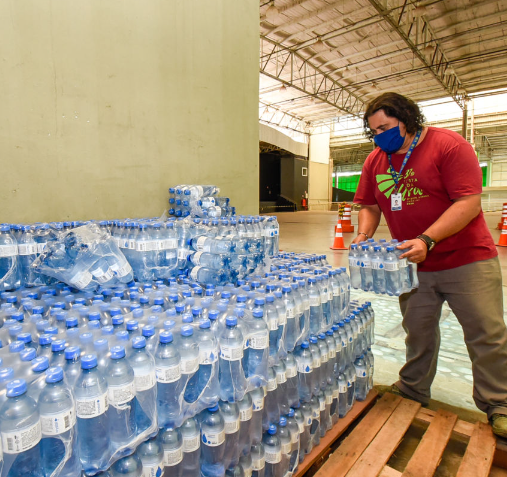
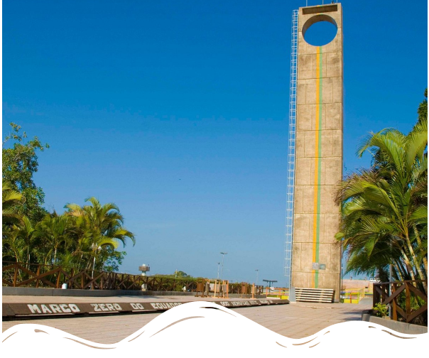

Quem Somos?
A Tomorrow's Water é uma ONG dedicada a fortalecer as propostas da ODS 6,
com foco no bem-estar da população por meio do acesso à saúde através da água
e saneamento básico.
Nossa missão é garantir a disponibilidade e o manejo sustentável
da água, seguindo os princípios da transparência, honestidade e coerência em todas
as nossas ações e relações.
Nossa visão é ser uma organização referência na mobilização e apoio à garantia da
disponibilidade e manejo sustentável da água e saneamento para todos.
Acreditamos que através da nossa atuação, podemos contribuir para um mundo
onde todas as pessoas tenham acesso a água limpa e serviços sanitários adequados.

Objetivos e Valores
Nossos objetivos são claros e desafiadores. Queremos garantir
a disponibilidade de água e saneamento para todos, além de alcançar
o acesso a saneamento e higiene adequados para cada indivíduo. Também
buscamos apoiar e fortalecer a participação das comunidades locais,
promovendo a melhoria na gestão da água e do saneamento.
Nossos valores são fundamentais em tudo o que fazemos.
Acreditamos na dignidade, direitos iguais e acessibilidade
à água potável para todos. Esses valores norteiam nossa abordagem
e nos motivam a trabalhar incansavelmente para alcançar nossos objetivos.


Onde Estamos?
A matriz da nossa organização está situada no estado
do Amapá, com uma filial na capital, Macapá - Onde enfrentamos desafios
significativos.
Infelizmente, o Amapá ocupa a primeira posição no ranking
dos estados brasileiros com alerta de escassez de água, e a cidade de Macapá é
considerada uma das áreas mais desprovidas de água potável.
Nós, da Tomorrow's Water, estamos comprometidos em enfrentar esses desafios de
frente, trabalhando em parceria com comunidades locais, autoridades governamentais
e outras organizações para garantir o acesso à água limpa e saneamento básico para
todos, especialmente para aqueles que mais necessitam.